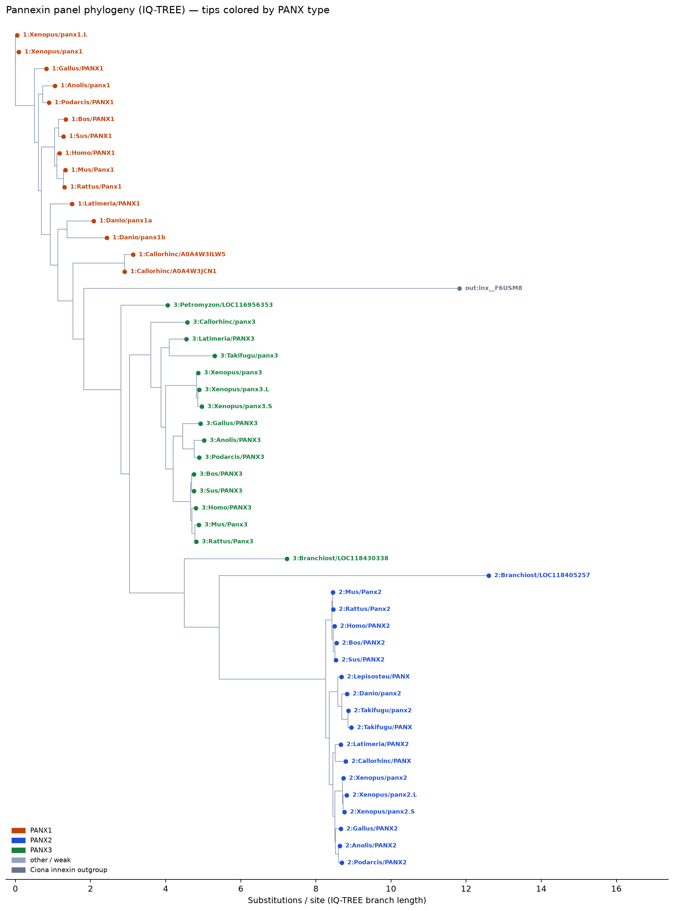
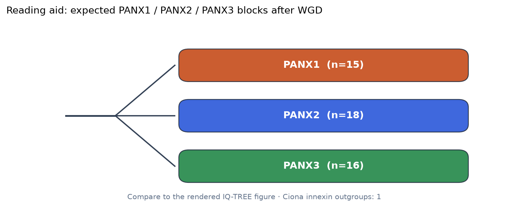

Pannexin phylogeny
MAFFT alignment + IQ-TREE on the curated vertebrate/chordate pannexin panel (49 sequences + 1 Ciona innexin outgroup sequences). Connexins are not included. The figure below is the rendered treefile, not a cartoon.
How to read it. Tip colours follow panel types (PANX1 / PANX2 / PANX3; a few generic UniProt symbols were typed by best MMseqs hit to named paralogs). Expect separate vertebrate paralog blocks after whole-genome duplications; teleosts can show extra PANX1 copies. Early-chordate tips are sparse because few curated UniProt entries exist — that is annotation occupancy, not a claim about every gene in every genome. Substitution model: existing alignment and tree (no recompute).

IQ-TREE phylogram from the curated alignment. Labels are shortened (type:Genus/gene).

Reading aid: expected PANX1–3 blocks after vertebrate genome duplications.
Literature vs this panel. The early-chordate bottleneck → pannexin → connexin sequence is the published evolutionary framing (Welzel & Schuster). This tree asks a narrower question: do the curated sequences fall into PANX1 / PANX2 / PANX3-like groups?